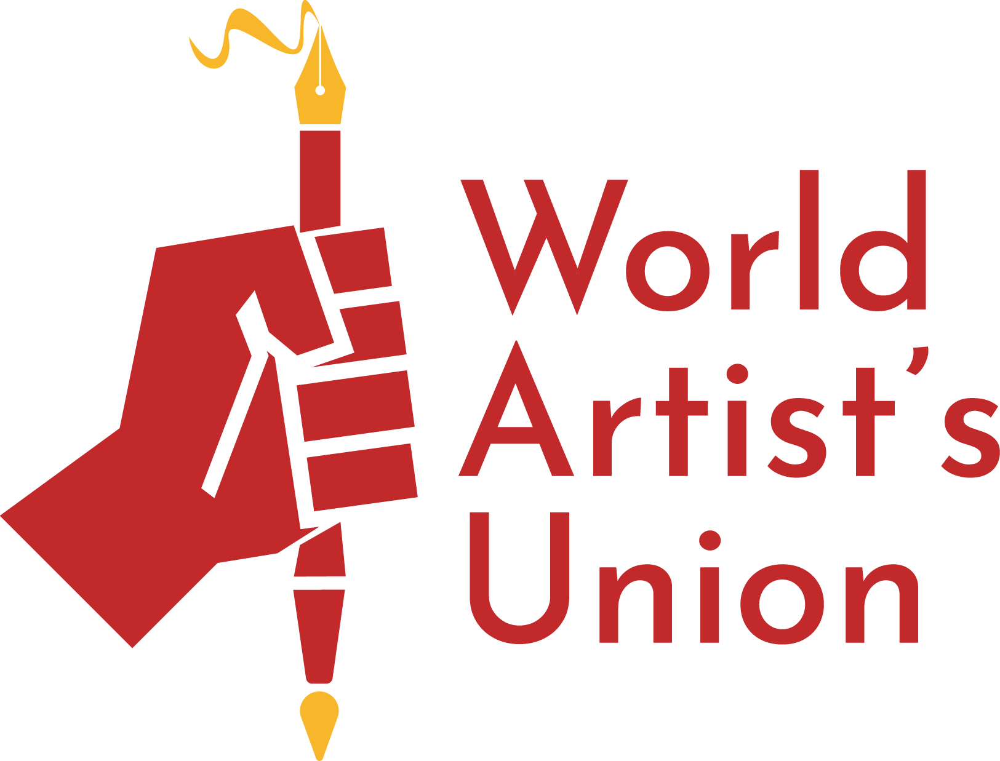

This is the original italian version of Manifesto Bianco. For English version seeWhite Manifesto
Manifesto Bianco
(1946)
L'arte si trova in un periodo latente. C'è una forza che l'uomo non può manifestare. Noi la esprimiamo in forma letterale in questo manifesto.
Per questo chiediamo a tutti gli uomini di scienza del mondo, i quali sanno che l'arte è una necessità vitale della specie, che orientino una parte delle loro investigazioni verso la scoperta di questa sostanza luminosa e malleabile e di strumenti che producano suoni che permettano lo sviluppo dell'arte tetradimensionale.
Consegneremo agli sperimentatori la documentazione necessaria.
Le idee non si rifiutano. Si trovano in germe nella società, poi i pensatori e gli artisti le esprimono. Tutte le cose nascono per necessità e son di valore nella loro epoca.
Le trasformazioni dei mezzi materiali di vita determinano gli stati psichici dell'uomo attraverso la storia. Si trasforma il sistema che dirige la civiltà dalle sue origini. Il suo posto viene occupato progressivamente dal sistema opposto nella sua essenza e in tutte le sue forme. Si trasformeranno tutte le condizioni di vita della società e di ogni individuo. Ogni uomo vivrà in base ad una organizzazione integrale del lavoro. Le scoperte smisurate della scienza gravitano su questa nuova organizzazione di vita. Il ritrovamento di nuove forze fisiche, il dominio sulla materia e lo spazio impongono gradualmente all'uomo condizioni che non sono mai esistite in tutto il corso della storia. L'applicazione di queste scoperte in tutte le forme della vita produce una modificazione nella natura dell'uomo. L'uomo prende una struttura psichica differente. Viviamo l'era della meccanica. Il cartone dipinto e il gesso eretto non hanno più ragione di essere.
Da che furono scoperte le forme d'arte conosciute, in distinti momenti della storia, si compie un processo analitico in ogni arte. Ogni arte ebbe il suo sistema in ordinamento indipendente. Si conobbero e svilupparono tutte le possibilità, si espresse tutto quello che si poteva esprimere. Identiche condizioni dello spirito si esprimevano con la musica, l'architettura e la poesia. L'uomo divideva le sue energie in manifestazioni diverse rispondendo a questa necessità di conoscere.
L'idealismo venne applicato quando l'esistenza non poté essere espressa in modo concreto. I meccanismi della natura venivano ignorati. Si conoscevano i processi dell'intelligenza. Tutto risiedeva nelle possibilità proprie all'intelligenza. La ricerca consisté in confusi esperimenti che molto di rado raggiungevano una verità. L'arte plastica consisté in rappresentazioni ideali delle forme conosciute, in immagini alle quali si attribuiva idealmente una realtà. Lo spettatore immaginava un oggetto dietro l'altro, immaginava la differenza fra i muscoli e le vesti rappresentate. Oggi la conoscenza sperimentale sostituisce la conoscenza immaginativa. Abbiamo coscienza di un mondo che esiste e si esprime da se stesso e che non può esser modificato dalle nostre idee. Necessitiamo di un'arte valida per se stessa nella quale non intervenga l'idea che di essa ci siamo fatti. Il materialismo stabilito in tutte le coscienze esige un'arte in possesso di valori propri, lontana dalle rappresentazioni che oggi costituiscono una farsa. Noi, uomini di questo secolo, forgiati da questo materialismo siamo divenuti insensibili dinanzi alla rappresentazione delle forme conosciute e all'esposizione di esperienze costantemente ripetute. Si concepì l'astrazione alla quale si arrivo progressivamente
attraverso la deformazione. Pero questo nuovo stato di cose non corrisponde alle esigenze dell'uomo attuale.
Si richiede un cambiamento nell'essenza e nella forma. Si richiede il superamento della pittura, della scultura, della poesia e della musica. E' necessaria un'arte maggiore in accordo con le esigenze dello spirito nuovo.
Le condizioni fondamentali dell'arte moderna si notano chiaramente nel secolo XIII nel quale comincia la rappresentazione dello spazio. I grandi maestri che compaiono successivamente dànno nuovo impulso a questa tendenza. Lo spazio viene rappresentato con ampiezza ogni volta maggiore durante diversi secoli. I barocchi fanno un salto in questo senso: lo rappresentano con una grandiosità non ancora superata e aggiungono alla plastica la nozione del tempo. Le figure sembrano abbandonare il piano e continuare nello spazio i movimenti raffigurati. Questa concezione fu conseguenza del concetto dell'esistenza che andava formandosi nell'uomo. La fisica di questa epoca, per la prima volta, esprime la natura per mezzo della dinamica. Si determina che il movimento è una condizione immanente alla materia come principio della comprensione dell'universo. Giunti a questo punto dell'evoluzione, la necessità di movimento è talmente grande che non può essere corrisposta dalla plastica. Quindi tale evoluzione viene continuata per opera della musica. La pittura e la scultura entrano nel neoclassicismo, autentica palude nella storia dell'arte, e restano annullate dall'arte del tempo. Conquistato il tempo, la necessità di movimento si manifesto pienamente. La liberazione progressiva dei canoni diede alla musica un dinamismo sempre crescente (Bach, Mozart, Beethoven).
Gli impressionisti sacrificano il disegno e la composizione. Nel futurismo vengono eliminati alcuni elementi. Il futurismo adotta il movimento come unico principio ed unico fine. I cubisti negavano che la loro pittura fosse dinamica; l'essenza del cubismo è la visione della natura in movimento. Quando la musica e la scultura uniscono il loro sviluppo nell'impressionismo, la musica si basa su sensazioni plastiche, la pittura sembra essere dissolta in un'atmosfera di suono. Nella maggioranza delle opere di Rodin notiamo che i volumi sembrano girare in questo stesso ambiente di suono. La sua concezione è essenzialmente dinamica e molte volte giunge ad una esacerbazione del movimento. Ultimamente non si è intuita la "forma" del suono? (Schoenberg) o una sovrapposizione o correlazione dei "piani sonori"? (Scriabin). E evidente la somiglianza fra le forme di Stravinsky e la planimetria cubista. L'arte moderna si trova in un momento di transizione nel quale si esige la rottura con l'arte antecedente per dar luogo a nuove concezioni. Questo stato di cose, visto attraverso una sintesi, è il passaggio dell'astrattismo al dinamismo. Situato nel mezzo di tale transizione, non ha potuto liberarsi completamente dalla eredità rinascimentale. Si impiegarono i medesimi materiali e le medesime discipline per esprimere una sensibilità completamente trasformata. Gli elementi antichi vennero impiegati in senso contrario. Furono forze opposte che combatterono in una stessa battaglia. Il conosciuto e lo sconosciuto, l'avvenire e il passato. Per questo si moltiplicarono le tendenze, appoggiate a valori opposti e perseguendo apparentemente obbiettivi diversi. Noi raccogliamo questa esperienza e la proiettiamo verso un avvenire chiaramente visibile.
Coscienti o incoscienti di questa ricerca, gli artisti moderni non l'hanno potuta raggiungere. Non disponendo dei mezzi tecnici necessari per dar movimento ai corpi, lo hanno dato solo in modo illusorio rappresentandolo con mezzi convenzionali. Si determina così la necessità di nuovi materiali tecnici che permettano di giungere all'obbiettivo ricercato. Questa circostanza, unita allo sviluppo della meccanica, ha prodotto il cinema ed il suo trionfo è una prova in più riguardo all'orientamento preso dallo spirito verso ciò che vi può essere di dinamico.
L'uomo è esausto di forme pittoriche e scultoree. Le sue esperienze, le sue opprimenti ripetizioni attestano che queste arti permangono stagnanti in valori estranei alla nostra civiltà, senza possibilità di svilupparsi nel futuro.
La vita tranquilla è scomparsa. La nozione del rapido è costante nella vita dell'uomo. L'èra artistica dei colori e delle forme paralitiche è sorpassata. L'uomo si fa sempre più insensibile alle immagini inchiodate senza indizi di vitalità. 14 antiche immagini immobili non soddisfano più le esigenze dell'uomo nuovo, formato nella necessità dell'azione, alla convivenza con la meccanica, che gli impone un dinamismo costante.
L'estetica del movimento organico rimpiazza l'estetica vuota delle forme fisse. Invocando questo mutamento operato nella natura dell'uomo, nei cambiamenti psichici e morali e di tutte le relazioni e attività umane, abbandoniamo la pratica delle forme d'arte conosciuta abbordiamo lo sviluppo di un'arte basata sulla unità del tempo e dello spazio.
L'arte nuova prende i suoi elementi dalla natura. L'esistenza, la natura e la materia sono una perfetta unità. Si sviluppano nel tempo e nello spazio. Il cambiamento è la condizione essenziale dell'esistenza. Il movimento, la proprietà di evolversi e svilupparsi è la condizione base della materia. Questa esiste in movimento e in nessun'altra maniera. Il suo sviluppo è eterno. Il colore e il suono si trovano nella natura legati alla materia.
La materia, il colore e il suono in movimento sono i fenomeni lo sviluppo simultaneo dei quali integra la nuova arte.
Il colore in volume si sviluppa nello spazio adottando forme successive. Il suono prodotto da mezzi ancora sconosciuti. Gli strumenti di musica non rispondono alla necessità di vaste sonorità e non producono sensazioni del l'ampiezza richiesta.
La costruzione di forme voluminose in mutamento mediante una sostanza plastica e mobile. Disposti nello spazio agiscono in forma sincronica, integrano immagini dinamiche. Esaltiamo cosi la natura in tutta la sua essenza. La materia in movimento manifesta la sua esistenza totale ed eterna, svolgendosi nel tempo e nello spazio, adottando nel suo mutarsi i diversi stati dell'esistenza. Concepiamo l'uomo nel suo nuovo incontro con la natura nella sua necessità di vincolarsi ad essa per trovare nuovamente l'esercizio dei suoi valori originali. Chiediamo una comprensione esatta dei valori primari dell'esistenza, per questo instauriamo ne]l'arte i valori sostanziali della natura. Presentiamo la sostanza, non la marginalità delle cose. Non rappresentiamo né l'uomo né gli altri animali né le altre forme. Queste sono manifestazioni della natura, mutevoli nel tempo, che cambiano e scompaiono secondo la successione dei fenomeni. Le loro condizioni fisiche sono soggette alla materia ed alla sua evoluzione. Noi ci dirigiamo verso la materia e la sua evoluzione, fonti generatrici dell'esistenza. Prendiamo l'energia propria della materia, la sua necessità d'essere e di svilupparsi. Postuliamo un'arte libera da qualunque artificio estetico. Approfittiamo di ciò che l'uomo ha di naturale, di reale. Rinneghiamo le falsità estetiche inventate dall'arte speculativa. Ci troviamo cosi vicini alla natura come mai l'arte lo è stata nel corso della storia. L'amore per la natura ci spinge a copiarla. Il sentimento di bellezza che ci dà la forma di una pianta o di un passero o il sentimento sessuale che ci procura il corpo di una donna, si svolge ed opera nell'uomo secondo la sua sensibilità. Rinneghiamo le emozioni particolari che ci producono determinate forme. La nostra intenzione è di riunire tutte le esperienze dell'uomo in una sintesi, che unita alla funzione delle loro condizioni naturali costituisca una manifestazione propria dell'essere. Prendiamo come principio le prime esperienze artistiche. Gli uomini della preistoria che percepirono per la prima volta un suono prodotto da colpi battuti su un corpo vuoto, si sentirono soggiogati dalle sue combinazioni ritmiche. Spinti dalla forza di suggestione dinanzi alla natura sconosciuta, sensazioni musicali, sensazione del ritmo. La nostra intenzione è di sviluppare questa condizione originale dell'uomo.
Il subcosciente, magnifico ricettacolo dove alloggiano tutte le immagini che l'intelligenza percepisce, adotta l'essenza e le forme di queste immagini, alloggia le nozioni riguardanti la natura dell'uomo. Così, nel trasformarsi il mondo oggettivo, si trasforma ciò che il subcosciente assimila, la qual cosa produce modificazioni nella forma di concezione dell'uomo. L'eredità storica ricevuta dagli stadi anteriori della civiltà e l'adattamento alle nuove condizioni di vita operano mediante questa funzione del subcosciente. Il subcosciente modella l'individuo, lo integra e lo trasforma. Gli dà l'ordinamento che riceve dal mondo e che l'individuo adotta. Tutte le concezioni artistiche sono dovute al subcosciente. La plastica si sviluppo in base alle forme della natura. Le manifestazioni del subcosciente si sono adattate pienamente a quelle in quanto dovute alla concezione idealistica dell'esistenza. La coscienza materialistica, ossia la necessità di cose chiaramente provabili, esige che le forme d'arte sorgano direttamente dall'individuo, soppresso qualunque adattamento alle forme naturali. Un'arte basata su forme create dal subcosciente, equilibrate dalla ragione, costituisce una reale espressione dell'essere e una sintesi del momento storico. La posizione degli artisti razionalisti è falsa. Nel loro sforzo per sovrapporre la ragione e negare la funzione del subcosciente ottengono solamente che la sua presenza sia meno visibile. In ognuna delle loro opere notiamo che questa facoltà ha funzionato. La ragione non crea. Nella creazione delle forme, la sua funzione è subordinata a quella del subcosciente In tutte le attività l'uomo funziona con la totalità delle sue facoltà. Il libero sviluppo di tutte queste è una condizione fondamentale nella creazione e nell'interpretazione della nuova arte. L'analisi e la sintesi, la meditazione e la spontaneità, la costruzione e la sensazione sono valori che concorrono alla sua integrazione in un'unità funzionale. E il suo sviluppo attraverso l'esperienza è l'unico cammino che conduce ad una manifestazione completa dell'essere. La società sopprime la separazione fra le sue forze e la integra in una sola forza maggiore. La scienza moderna si basa sulla unificazione progressiva dei suoi elementi. L'umanità riunisce i suoi valori e le sue conoscenze. È un movimento radicato nella storia da vari secoli di sviluppo. Da questo nuovo stato di coscienza sorge un'arte integrale, nella quale l'essere funziona e si manifesta in tutta la sua totalità. Passati vari millenni di sviluppo artistico analitico, giunge il momento della sintesi. Prima la separazione fu necessaria. Oggi costituisce una disintegrazione dell'unità concepita.
Concepiamo la sintesi come una somma di elementi fisici: colore, suono, movimento, tempo, spazio, la quale integri una unità fisico-psichica. Colore, l'elemento dello spazio, suono, l'elemento del tempo, il movimento che si sviluppa nel tempo e nello spazio, sono le forme fondamentali dell'arte nuova, che contiene le quattro dimensioni dell'esistenza. Tempo e spazio.
La nuova arte richiede la funzione di tutte le energie dell'uomo, nella creazione e nell'interpretazione. L'essere si manifesta integralmente, con la pienezza della sua vitalità.
COLORE-SUONO-MOVIMENTO.
PRIMO MANIFESTO DELLO SPAZIALISMO
(maggio 1947)
L'arte è eterna, ma non può essere immortale. È eterna in quanto un suo gesto, come qualunque altro gesto compiuto, non può non continuare a permanere nello spirito dell'uomo come razza perpetuata. Ma l'essere eterna non significa per nulla che sia immortale. Anzi essa non è mai immortale. Potrà vivere un anno o millenni, ma l'ora verrà sempre, della sua distruzione materiale. Rimarrà eterna come gesto, ma morrà come materia. Ora noi siamo arrivati alla conclusione che sino ad oggi gli artisti, coscienti o incoscienti, hanno sempre confusi i termini di eternità e di immortalità, cercando di conseguenza per ogni arte la materia più adatta a farla più lungamente perdurare, sono cioè rimasti vittime coscienti o incoscienti della materia, hanno fatto decadere il gesto puro eterno in quello duraturo nella speranza impossibile della immortalità. Noi pensiamo di svincolare l'arte dalla materia, di svincolare il senso dell'eterno dalla preoccupazione dell'immortale. E non ci interessa che un gesto, compiuto, viva un attimo o un millennio, perché siamo veramente convinti che, compiutolo, esso è eterno. È impossibile che l'uomo dalla tela, dal bronzo, dal gesso, dalla plastilina non passi alla pura immagine aerea, universale, sospesa, come fu impossibile che dalla grafite non passasse alla tela, al bronzo, al gesso, alla plastilina, senza per nulla negare la validità eterna delle immagini create attraverso grafite, bronzo, tela, gesso, plastilina. Non sarà possibile adattare a queste nuove esigenze immagini già ferme nelle esigenze del passato. Siamo convinti che, dopo questo fatto, nulla verrà distrutto del passato, né mezzi né fini, siamo convinti che si continuerà a dipingere e a scolpire anche attraverso le materie del passato, ma siamo altrettanto convinti che queste materie, dopo questo fatto, saranno affrontate e guardate con altre mani e altri occhi e saranno pervase di sensibilità più affinata.
Maggio 1947
(Beniamino Joppolo, Lucio Fontana, Giorgio Kaisserlian, Milena Milani).
MANIFESTO TECNICO DELLO SPAZIALISMO
(1951)
Tutte le cose sorgono per necessità e valorizzano le esigenze del proprio tempo. Le trasformazioni dei mezzi materiali della vita determinano gli stati d'animo dell'uomo attraverso la storia. Si trasforma il sistema che dirige la civilizzazione dalle sue origini. Progressivamente quel sistema che si oppone ad altro sistema già accettato, si sostituisce ad esso nella sua essenza ed in tutte le sue forme. Si trasformano le condizioni della vita e della società e di ogni individuo. In tale progressione l'uomo tende a vivere sulla base di una organizzazione integrale del lavoro. Le scoperte della scienza gravitano su ogni organizzazione della vita. La scoperta di nuove forze fisiche, il dominio della materia e dello spazio impongono gradualmente all'uomo condizioni che non sono mai esistite nella sua precedente storia. L'applicazione di queste scoperte in tutte le forme della vita crea una trasformazione sostanziale del pensiero. Il cartone dipinto, la pietra eretta non hanno più senso; le plastiche consistevano in rappresentazioni ideali di forme conosciute ed immagini alle quali idealmente si attribuivano realtà. Il materialismo stabilito in tutte le coscienze esige un'arte lontana dalla rappresentazione che oggi costituirebbe una farsa. Gli uomini di questo secolo, forgiati a questo materialismo sono rimasti insensibili alla rappresentazione delle forme conosciute ed alle narrazioni di esperienze costantemente ripetute. Si concepì l'astrazione alla quale siamo arrivati progressivamente attraverso le deformazioni. Pera questo nuovo periodo non risponde alle esigenze dell'uomo attuale. È necessario quindi un cambio nell'essenza e nella forma. È necessaria la superazione della pittura, della scultura, della poesia. Si esige ora un'arte basata sulla necessità di questa nuova visione. Il barocco ci ha diretti in questo senso, lo rappresenta come grandiosità ancora non superata ove si unisce alla plastica la nozione del tempo, le figure pare abbandonino il piano e continuino nello spazio i movimenti rappresentati. Questa concezione fu la conseguenza dell'idea dell'esistenza che si formava nell'uomo, la fisica di quell'epoca rivela per la prima volta la natura della dinamica, si determina che il movimento è una condizione immanente alla materia come principio della comprensione dell'universo. Arrivati a questo punto dell'evoluzione la necessità del movimento è tanto importante da non essere più raggiungibile dalle arti plastiche ed allora quella evoluzione è continuata dalla musica e le arti entrano nel neoclassicismo, pericoloso pantano della storia dell'arte. Conquistato il tempo, la necessità del movimento si manifesta pienamente. Gli impressionisti sacrificano il disegno della composizione al colore-luce. Nel futurismo sono eliminati alcuni elementi, altri perdono la loro importanza restando subordinati alla sensazione. Il futurismo adotta il movimento come principio ed unico fine. Lo sviluppo di una bottiglia nello spazio, forme uniche della continuità dello spazio iniziano la sola e vera grande evoluzione dell'arte contemporanea (dinamismo plastico): gli spaziali vanno al di là di questa idea: né pittura, né scultura "forme, colore, suono attraverso gli spazi". Coscienti ed incoscienti in questa ricerca, gli artisti non avrebbero potuto raggiungere la finalità senza poter disporre di nuovi mezzi tecnici necessari e di nuove materie. Ciò giustifica l'evoluzione del mezzo nell'arte. Il trionfo del fotogramma, ad esempio, è una testimonianza definitiva per l'indirizzo preso dallo spirito verso il dinamico. Plaudendo a questa trasformazione nella natura dell'uomo, abbandoniamo la pratica delle forme di arte conosciuta ed affrontiamo lo sviluppo di un'arte basata nell'unità di tempo e dello spazio. L'esistenza, la natura, la materia sono una perfetta unità e si sviluppano nel tempo e nello spazio. Il movimento, 18 proprietà di evoluzione e di sviluppo è la condizione bue della materia; questa esiste ormai in movimento e non in altra forma, il suo sviluppo è eterno, il colore ed il suono sono i fenomeni attraverso il cui sviluppo simultaneo s'integra la nuova arte. Il subcosciente, dove si annidano tutte le immagini, che percepisce l'intendimento, adotta l'essenza e le forme di queste immagini, accetta le nozioni che informano la natura dell'uomo. Il subcosciente plasma l'individuo, lo completa e lo trasforma gli dà l'indirizzo che riceve dal mondo e che l'individuo di volta in volta adotta. La società tende a sopprimere la separazione fra le due forze per riunirle in una sola forma maggiore, la scienza moderna si basa sull'unificazione progressiva fra i suoi elementi. Da questo nuovo stato della coscienza sorge un'arte integrale nella quale l'essere funziona e si manifesta nella sua totalità. Passati vari millenni del suo sviluppo artistico analitico, arriva il momento della sintesi. Prima la separazione fu necessaria, oggi costituisce una disintegrazione dell'unità concepita. Concepiamo la sintesi con una somma di elementi fisici: colore, suono, movimento, spazio, integranti un'unità ideale e materiale. Colore, l'elemento dello spazio, suono, l'elemento del tempo ed il movimento che si sviluppa nel tempo e nello spazio. Son le forme fondamentali dell'arte nuova che contiene le quattro dimensioni dell'esistenza. Questi sarebbero i concetti teorici dell'arte spaziale, brevemente esporrò la parte tecnica e la sua possibilità di sviluppo, che contiene le quattro dimensioni dell'esistenza. L'architettura è volume, base, altezza, profondità, contenute nello spazio, la 4a dimensione ideale dell'architettura è l'arte. La scultura è volume, base, altezza, profondità. La pittura è descrizione. Il cemento armato (il mezzo) rivoluziona gli stili e la statica del]'architettura moderna. Allo stile decorativo subentrano ritmi e volumi. Alla statica, la libertà di costruire indipendentemente dalle leggi di gravità (ho visto un progetto di casa in forma d'uovo, di un'altra buttata su un prato infischiandosene della divina proporzione). A questa nuova architettura un'arte basata su tecniche e mezzi nuovi; Arte spaziale, per ora, neon, luce di Wood, televisione, la 4a dimensione ideale dell'architettura. Permettetemi di fare delle fantasie sulle città del futuro, come sono rimaste fantasie le città sole, luce: la conquista degli spazi o l'atomica, suggeriscono all'uomo di proteggersi. Già si costruiscono fabbriche sotterranee; nasceranno centri che potrebbero essere un insieme di cellule, l'uomo finalmente finirà l'intromissione alle bellezze della natura. Si parla in arte di 4a dimensione, di spazio, di arte spaziale; di tutto questo si hanno concetti vaghi o errati. Un sasso bucato, un elemento verso il cielo, una spirale, sono la conquista illusoria dello spazio, sono forme contenute nello spazio nelle loro dimensioni, meno una. (Esempio: 1, 2, 3, 4). La Torre di Babele è un esempio antichissimo della pretesa dell'uomo per il dominio dello spazio. La vera conquista dello spazio fatta dall'uomo, è il distacco dalla terra, dalla linea d'orizzonte, che per millenni fu la base della sua estetica e proporzione. Nasce così la 4a dimensione, il volume è ora veramente contenuto nello spazio in tutte le sue dimensioni. La prima forma spaziale costruita dall'uomo è l'aereostato. Col dominio dello spazio l'uomo costruisce la prima architettura dell'Era Spaziale- l'areoplano. A queste architetture spaziali in movimento trasmetteranno le nuove fantasie dell'arte. Si va formando una nuova estetica, forme luminose attraverso gli spazi. Movimento, colore, tempo, e spazio i concetti della nuova arte. Nel subcosciente dell'uomo della strada una nuova concezione della vita; i creatori iniziano lentamente ma inesorabilmente la conquista dell'uomo della strada. L'opera d'arte non è eterna, nel tempo esiste l'uomo e la sua creazione, finito l'uomo continua l'infinito.
